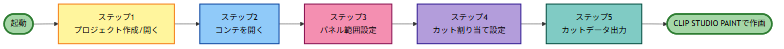

EconTemple（エコンテンプレ）は、絵コンテからカットごとのパネルを一括で切り出し、 尺・セリフ・カメラワークを載せた CLIP STUDIO PAINT 用 XDTS タイムシートの出力まで 一貫サポートする Windows デスクトップアプリです。 制作進行の素材準備も、アニメーターの作画ファイル作成も、このアプリひとつで完結します。
最新版 zip を解凍して EconTemple.exe を起動するだけ。アカウント登録・クラウド接続は不要です。
スクショ→トリミング→リネーム……。数百カット規模になると、それだけで丸一日が消えます。
コンテに書いてある尺やセリフを、クリスタのタイムラインへ手で転記。単純作業なのにミスは許されません。
「このカット、どこと兼用だっけ？」が口頭とメモ頼み。素材の重複作成や渡し漏れの原因になっています。
その準備作業、コンテを読み込んだその場でまとめて終わらせられます。
現場のフローに合わせた直線的な設計です。PDF でもフォルダ内画像でも、いつものコンテをそのまま読み込めます。

作業状態はプロジェクトファイルに保存。いつでも中断・再開できます。
PDF 読み込みまたは画像フォルダ指定。複数話数・複数フォルダの管理にも対応。
バッチ設定で全ページ一括、ページごとのカスタム調整も自在。
尺（秒＋コマ）・セリフ・カメラワーク・担当者をカット単位で管理。
パネル画像と XDTS タイムシートを書き出し。あとはクリスタで作画に入るだけ。
派手な機能より、毎日の工程で確実に効く機能を。実制作のワークフローを踏まえて設計しています。
コンテページからパネルを一括で切り出し。バッチ設定で全ページに適用しつつ、 変形ゴマやページごとの例外はカスタム抽出で個別対応できます。
パネルをカットに割り当てて、コンテに書かれた情報をそのままデータ化。 尺は「秒＋コマ」で入力でき、タイムシートに正確に反映されます。
兼用カットは複数選択して右クリックするだけで設定完了。 カット一覧に兼用関係が明示されるので、素材の重複作成や渡し漏れを防げます。 書き出しにも兼用設定が反映されます。
コンテページ上に直接描き込めるページ描画機能を搭載。 作打ちで出た指示や注意点をその場で書き残せるので、 別アプリや紙のコンテとの往復がなくなります。
カット情報を載せた XDTS タイムシートファイルを生成。 CLIP STUDIO PAINT に読み込めば、尺の入ったタイムラインとパネル画像が揃った状態から すぐに作画を始められます。
プロジェクトも設定もすべてローカル保存。クラウド接続なし・個人情報の送信なし。公開前の未発表作品も安心して扱えます。
zip を解凍して exe を起動するだけ。レジストリ変更なし。管理者権限が制限されたスタジオの PC でも、フォルダごと移動して使えます。
各リリースに SHA-256 ハッシュを記載。VirusTotal でのスキャン確認手順も公開しており、導入前にご自身で安全性を検証できます。
変更履歴（CHANGELOG）を全リリースで公開。バグ報告・機能要望の窓口を常設し、現場からのフィードバックを反映し続けています。
配られたプロジェクトを開いて使う側——演出・レイアウト・作画の各担当——は、 ライセンス認証をしなくても、規模の制限も受けずにそのまま使えます。 現場の人数分のライセンスを用意する必要はありません。
ライセンスが要るのは、プロジェクトを発行する側（作打ち・制作進行）だけです。 その発行側の制限も、体験版の期限ではなく扱える規模で区切っています。 小規模なテストなら無料のまま、実運用の規模になったらライセンス認証で解除できます。
金額と最新のプランは Shinosuke ツールスイートの料金ページ に掲載しています。
買い切りプランは準備中です — 価格は、実際に使っていただいた方のフィードバックを踏まえて確定します。
PDF の読み込みと、画像ファイルの入ったフォルダ指定に対応しています。スキャンした紙コンテの画像でも、デジタルで作成されたコンテでも扱えます。
タイムシート出力は CLIP STUDIO PAINT 用の XDTS 形式に対応しています。切り出したパネル画像自体は通常の画像ファイルなので、他のソフトでも素材として利用できます。
インストーラーを使わないポータブル形式のため、zip を解凍するだけで動作します。レジストリの変更や管理者権限は不要です。配布 zip の SHA-256 ハッシュを公開しており、VirusTotal での確認手順もご案内しています。
ありません。プロジェクトファイル・設定・画像はすべてローカルに保存され、アプリがコンテ内容を外部へ送信することはありません。未発表作品のコンテも安心してお使いいただけます。
作成済みのデータが消えることはありません。ライセンスキーを認証すれば、そのままのプロジェクトで制限が解除されます。
GitHub Issues のほか、同梱の SUPPORT.md に記載の窓口（メール等）で受け付けています。現場からのフィードバックは今後の開発に反映しています。
ダウンロードして解凍するだけで、5分後には手元のコンテでパネル切り出しを始められます。
同梱のサンプルプロジェクトで、まずは一連の流れを体験してください。
| OS | Windows 10 / 11（64-bit） |
| メモリ | 4GB 以上推奨 |
| ディスク | 100MB 以上の空き容量 |
| インストール | 不要（zip 解凍のみ・レジストリ変更なし） |